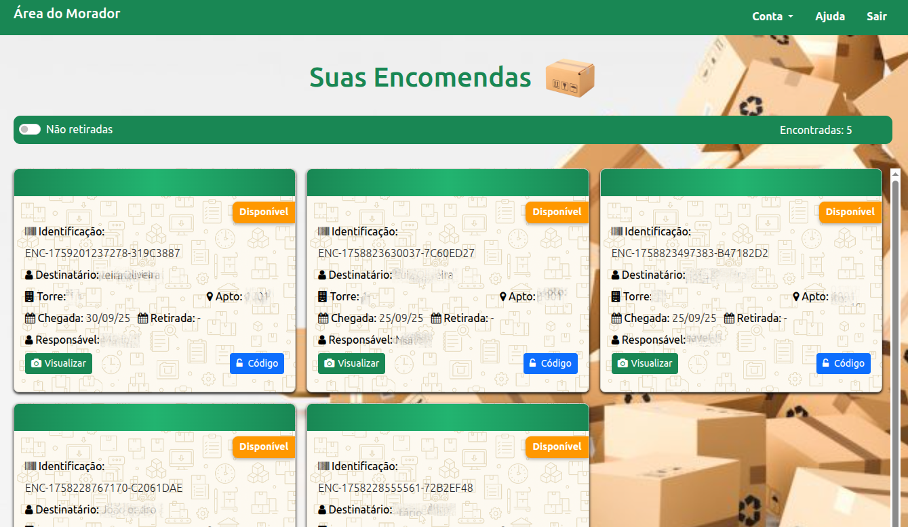
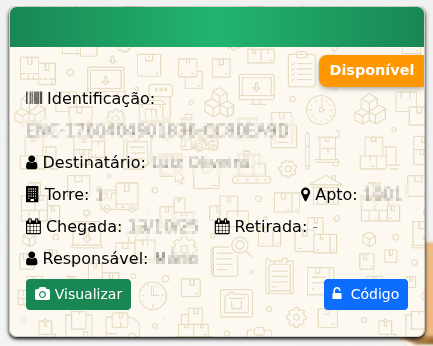
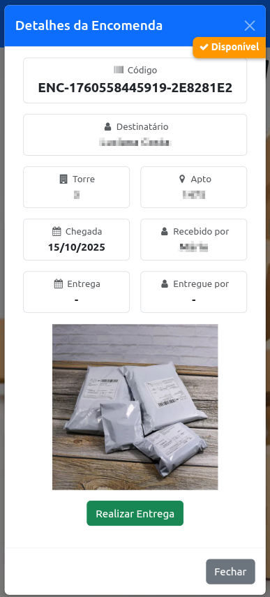
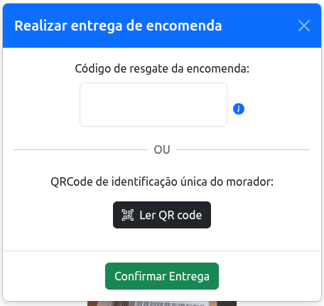
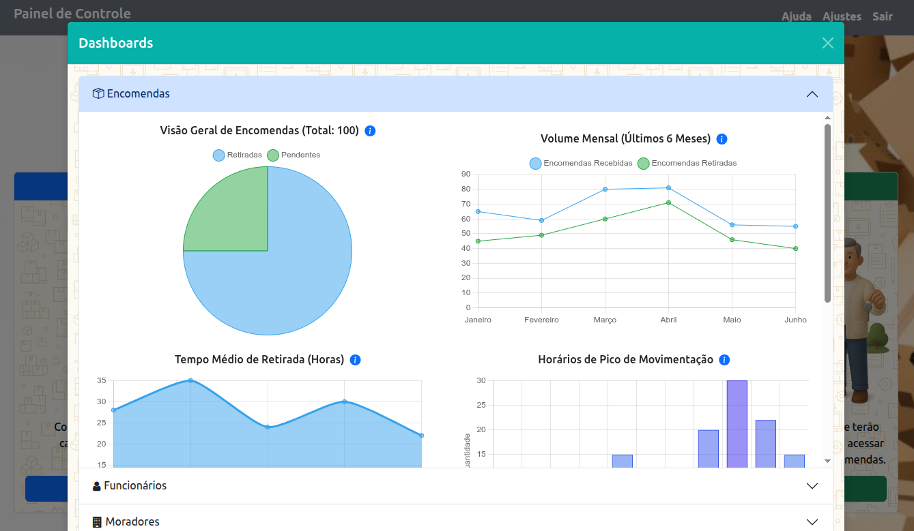
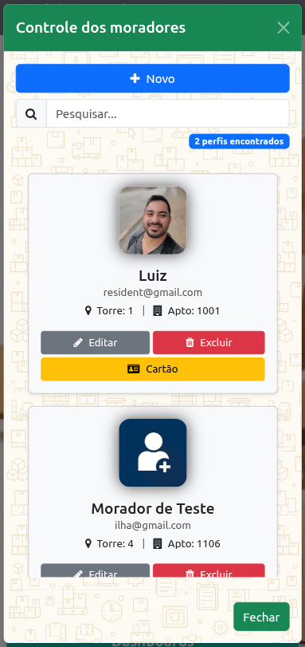

<section id="demonstracao" class="section demo-section">
    <div class="container">
        <h2 class="title is-2 has-text-centered">Conheça a nossa interface</h2>
        <p class="subtitle is-5 has-text-centered mb-5">
            Navegue pelas telas e veja como o sistema é simples e intuitivo para cada perfil.
        </p>

        <!-- Abas para Mobile (visível apenas em telas pequenas) -->
        <ul class="nav nav-tabs nav-fill" id="demoTab" role="tablist">
            <li class="nav-item" role="presentation">
                <button class="nav-link active" id="moradores-tab" data-bs-toggle="tab" data-bs-target="#moradores-pane"
                    type="button" role="tab" aria-controls="moradores-pane" aria-selected="true">Moradores</button>
            </li>
            <li class="nav-item" role="presentation">
                <button class="nav-link" id="funcionarios-tab" data-bs-toggle="tab" data-bs-target="#funcionarios-pane"
                    type="button" role="tab" aria-controls="funcionarios-pane"
                    aria-selected="false">Funcionários</button>
            </li>
            <li class="nav-item" role="presentation">
                <button class="nav-link" id="admin-tab" data-bs-toggle="tab" data-bs-target="#admin-pane" type="button"
                    role="tab" aria-controls="admin-pane" aria-selected="false">Gestores</button>
            </li>
        </ul>

        <!-- Conteúdo das Abas para Mobile (visível apenas em telas pequenas) -->
        <div class="tab-content" id="demoTabContent">
            <div class="tab-pane fade show active" id="moradores-pane" role="tabpanel" aria-labelledby="moradores-tab">
                <div class="demo-scroll-container">
                    <div class="row align-items-center mb-5">
                        <div class="col-md-7 order-md-1">
                            <h5 class="fw-bold">Visão Geral</h5>
                            <p class="text-justify">
                                Logo na tela inicial, o morador tem uma visão clara e organizada de todas as suas
                                encomendas. É possível filtrá-las para exibir apenas as <strong>não
                                    retiradas</strong> e acompanhar o
                                status de cada uma, com foco em <strong>rapidez, praticidade e
                                    transparência.</strong>
                            </p>
                        </div>
                        <div class="col-md-5 order-md-2">
                            
                        </div>
                    </div>
                    <div class="row align-items-center mb-5">
                        <div class="col-md-7 order-2 order-md-2">
                            <h5 class="fw-bold">Detalhes de cada encomenda</h5>
                            <p class="text-justify">Cada entrega é exibida por meio de um item com todas as
                                informações relevantes, como: destinatário, torre e apartamento, além datas de
                                chegada e responsável pelo registro.</p>
                            <p class="text-justify"> Tudo de forma simples e direta, facilitando a conferência e o
                                acompanhamento.</p>
                        </div>
                        <div class="col-md-5 order-1">
                            
                        </div>
                    </div>
                    <div class="row align-items-center mb-5">
                        <div class="col-md-7 order-md-1">
                            <h5 class="fw-bold">Visualização da encomenda</h5>
                            <p class="text-justify">O morador tem acesso a uma foto real da encomenda, o que o
                                possibilita um planejamento otimizado para a retirada.</p>
                        </div>
                        <div class="col-md-5 order-md-1">
                            
                        </div>
                    </div>
                    <div class="row align-items-center mb-5">
                        <div class="col-md-5 order-1">
                            
                        </div>
                        <div class="col-md-7 order-2">
                            <h5 class="fw-bold">Código de Retirada</h5>
                            <p class="text-justify">Cada encomenda, individualmente, possui um código único
                                que precisa ser informado no ato da retirada. Esse recurso garante que o pacote seja
                                entregue <strong>somente às pessoas autorizadas</strong>, reforçando a segurança do
                                processo.</p>
                        </div>
                    </div>
                    <div class="row align-items-center mb-5">
                        <div class="col-md-7 order-md-1">
                            <h5 class="fw-bold">Cartão com QR Code</h5>
                            <p class="text-justify">É possível solicitar à administração um cartão com um
                                <strong>QR Code exclusivo</strong> para cada morador. A apresentação desse cartão na
                                portaria substitui o uso do código de retirada, tornando o processo mais ágil e
                                mantendo
                                a mesma garantia de <strong>segurança e controle</strong>.
                            </p>
                            <p>
                                Esse recurso também promove a <strong>inclusão</strong> de moradores que possam ter
                                dificuldades de acesso ao código digital ainda que em situações pontuais, como por
                                exemplo:
                                falta de bateria ou de conexão no momento da retirada.
                            </p>
                        </div>
                        <div class="col-md-5 order-md-2">
                            
                        </div>
                    </div>
                    <div class="row align-items-center">
                        <div class="col-md-7 order-2">
                            <h5 class="fw-bold">Estatísticas de uso</h5>
                            <p class="text-justify">Gráficos simples mostram um histórico de encomendas retiradas e
                                uma
                                visão geral das encomendas pendentes, oferecendo mais controle e transparência sobre
                                todas as movimentações.</p>
                        </div>
                        <div class="col-md-5 order-1">
                            
                        </div>
                    </div>
                </div>
            </div>

            <div class="tab-pane fade" id="funcionarios-pane" role="tabpanel" aria-labelledby="funcionarios-tab">
                <div class="demo-scroll-container">
                    <div class="row align-items-center mb-5">
                        <div class="col-md-7 order-2">
                            <h5 class="fw-bold">Visão Geral: foco na otimização</h5>
                            <p class="text-justify">Ao acessar o sistema, o funcionário encontra uma visão
                                organizada e
                                imediata de todas as encomendas. Filtros rápidos por destinatário, torre,
                                apartamento ou
                                status permitem localizar qualquer pacote em segundos. Cada encomenda registrada
                                exibe
                                nome do destinatário, torre, apartamento, data de chegada, responsável pelo registro
                                e status de disponibilidade, garantindo controle total e agilidade.</p>
                        </div>
                        <div class="col-md-5 order-1">
                            
                        </div>
                    </div>
                    <div class="row align-items-center mb-5">
                        <div class="col-md-7 order-md-1">
                            <h5 class="fw-bold">Cadastro Inteligente de Novas Encomendas</h5>
                            <p class="text-justify">Registrar uma encomenda nunca foi tão rápido. Com apenas
                                <strong>duas fotos</strong>, todo o processo é concluído, sem complicações.
                            </p>
                            <h6>Passo 1: Captura e Registro Visual</h6>
                            <p>Tudo começa com uma foto. Capture uma imagem nítida e geral do pacote. Essa imagem é
                                crucial, pois ela será o registro visual da encomenda no sistema e aparecerá para o
                                funcionário no momento da entrega.</p>
                        </div>
                        <div class="col-md-5 order-md-2">
                            
                        </div>
                    </div>
                    <div class="row align-items-center mb-5">
                        <div class="col-md-7 order-2 order-md-2">
                            <h6>Passo 2: A Inovação que Economiza Tempo</h6>
                            <p>Este é o coração do projeto!</p>
                            <p>O sistema utiliza o <strong>Reconhecimento Óptico de Caracteres (OCR)</strong>, um
                                sistema avançado para ler automaticamente as informações necesárias da etiqueta da
                                encomenda
                                (destinatário, torre e apartamento). Basta capturar uma foto da etiqueta e deixar o
                                sistema preencher os
                                campos para você. Menos digitação, mais velocidade – a tecnologia a seu serviço.</p>
                        </div>
                        <div class="col-md-5 order-1">
                            
                        </div>
                    </div>
                    <div class="row align-items-center mb-5">
                        <div class="col-md-7 order-md-1">
                            <h6>Passo 3: Confirmação Rápida</h6>
                            <p>Revise os dados extraídos pelo OCR. Se tudo estiver
                                correto, basta confirmar o registro. A encomenda é automaticamente listada na tela de
                                gerenciamento, e o morador pode ser notificado instantaneamente sobre a chegada.</p>
                        </div>
                        <div class="col-md-5 order-md-2">
                            
                        </div>
                    </div>
                    <div class="row align-items-center mb-5">
                        <div class="col-md-7 order-2">
                            <h5 class="fw-bold">Entrega Segura e Comprovada</h5>
                            <p class="text-justify">A entrega é o momento mais importante. Esse processo garante a
                                identificação correta do morador e o registro de comprovação da retirada.</p>
                            <p><strong>Pré-Entrega: Conferência Visual</strong></p>
                            <p>
                                Antes de entregar, o funcionário pode visualizar a foto do pacote e conferir os
                                dados do
                                destinatário. Essa etapa elimina erros e garante <strong>certeza</strong> sobre a
                                entrega.</p>
                        </div>
                        <div class="col-md-5 order-1">
                            
                        </div>
                    </div>
                    <div class="row align-items-center mb-5">
                        <div class="col-md-7 order-md-1">
                            <h5 class="fw-bold">Entrega</h5>
                            <p class="text-justify">
                                O sistema permite que as entregas sejam realizadas apartir da garantia e segurança,
                                para
                                o morador
                                e para o funcionário que as realiza. O morador pode fornecer o
                                Código de Resgate Único (gerado pelo sistema e enviado na notificação de chegada)
                                ou, de
                                forma ainda mais rápida e segura, o funcionário pode ler o QR Code do cartão do
                                morador.
                                Esse passo garante que a encomenda está sendo retirada por alguém autorizado e evita
                                qualquer eventual erro que pudesse acontecer.</p>
                        </div>
                        <div class="col-md-5 order-md-2">
                            
                        </div>
                    </div>
                    <div class="row align-items-center mb-5">
                        <div class="col-md-7 order-2">
                            <h5 class="fw-bold">Pós-Entrega: Comprovação Imediata</h5>
                            <p class="text-justify">
                                Após a confirmação, o status é atualizado automaticamente para “Retirada”. Cada
                                etapa da
                                entrega fica registrada no sistema, permitindo <strong>acesso completo a históricos
                                    e
                                    auditorias</strong>, fortalecendo o controle e a transparência do processo.</p>
                        </div>
                        <div class="col-md-5 order-1">
                            
                        </div>
                    </div>
                </div>
            </div>

            <div class="tab-pane fade" id="admin-pane" role="tabpanel" aria-labelledby="admin-tab">
                <div class="demo-scroll-container">

                    <p>Para o síndico, zelador ou administrador, o sistema oferece um Painel de Controle
                        centralizado.
                    </p>
                    <p>Com ele, a gestão de pessoas e a análise de desempenho se tornam simples e baseadas em dados
                        concretos.</p>


                    <!-- Item 1 -->
                    <div class="row align-items-center mb-5">
                        <div class="col-md-7 order-2 order-md-1">
                            <h5 class="fw-bold">Visão Centralizada da Gestão</h5>
                            <p class="text-justify">A tela principal do administrador é o ponto de partida para o
                                controle total. De forma clara, você tem acesso a quatro módulos essenciais:</p>
                            <ul>
                                <li><strong>Encomendas:</strong> Acesso à lista completa de encomendas e o registro
                                    histórico.</li>
                                <li><strong>Dashboards:</strong> O módulo de análise de dados e desempenho do
                                    sistema.
                                </li>
                                <li><strong>Funcionários:</strong> Onde o controle de acesso e perfis é gerenciado.
                                </li>
                                <li><strong>Moradores:</strong> Onde os dados dos usuários e suas permissões são
                                    configurados.</li>
                            </ul>
                        </div>
                        <div class="col-md-5 order-1 order-md-2">
                            
                        </div>
                    </div>
                    <!-- Item 2 -->
                    <div class="row align-items-center mb-5">
                        <div class="col-md-7 order-2 order-md-2">
                            <h5 class="fw-bold">Dashboards de Performance e Eficiência</h5>
                            <p class="text-justify">
                                O módulo Dashboards transforma os dados brutos de uso do sistema em informações
                                estratégicas para a gestão do condomínio.</p>
                            <ul>
                                <li><strong>Visão Geral de Encomendas:</strong> Saiba o volume total de encomendas e
                                    a
                                    proporção exata
                                    entre
                                    as Retiradas e as Pendentes no momento.</li>
                                <li><strong>Volume Mensal:</strong> Acompanhe o fluxo de trabalho e identifique
                                    tendências, comparando o
                                    volume de Encomendas Recebidas versus Encomendas Retiradas ao longo dos últimos
                                    meses.</li>
                                <li><strong>Tempo Médio de Retirada:</strong> Monitore a eficiência do processo de
                                    entrega, entendendo
                                    quantas horas, em média, uma encomenda leva para ser retirada após a chegada.
                                    Essa
                                    métrica é vital para otimizar a comunicação com os moradores.</li>
                                <li><strong>Horários de Pico de Movimentação:</strong> Identifique os períodos do
                                    dia
                                    com maior número de
                                    retiradas. Use essa informação para melhorar o dimensionamento da equipe da
                                    portaria.</li>
                            </ul>

                            </p>
                        </div>
                        <div class="col-md-5 order-1 order-md-1">
                            
                        </div>
                    </div>
                    <!-- Item 3 -->
                    <div class="row align-items-center mb-5">
                        <div class="col-md-7 order-2 order-md-1">
                            <h5 class="fw-bold">Gestão de Funcionários</h5>
                            <p class="text-justify">
                                Gerencie os perfis dos funcionários que estão autorizados a receber e entregar
                                encomendas. O cadastro é simples e permite a você <strong>editar ou excluir</strong>
                                perfis a qualquer momento, garantindo que o acesso esteja sempre atualizado e
                                seguro.
                            </p>
                        </div>
                        <div class="col-md-5 order-1 order-md-2">
                            
                        </div>
                    </div>


                    <div class="row align-items-center mb-5">
                        <div class="col-md-7 order-2 order-md-2">
                            <h5 class="fw-bold">Gestão de Moradores</h5>
                            <p class="text-justify"> Mantenha o cadastro de moradores organizado. Além de incluir ou
                                remover usuários, a tela permite associar cada morador à sua respectiva
                                <strong>Torre e
                                    Apartamento.</strong> Mais importante, é aqui que o administrador pode gerenciar
                                o
                                <strong>Cartão de Identificação</strong> do morador (que pode ser usado para a
                                leitura
                                do QR Code na
                                entrega), essencial para o nosso processo de retirada segura.
                            </p>
                        </div>
                        <div class="col-md-5 order-1 order-md-1 text-center">
                            
                        </div>
                    </div>

                </div>
            </div>
        </div>
</section>